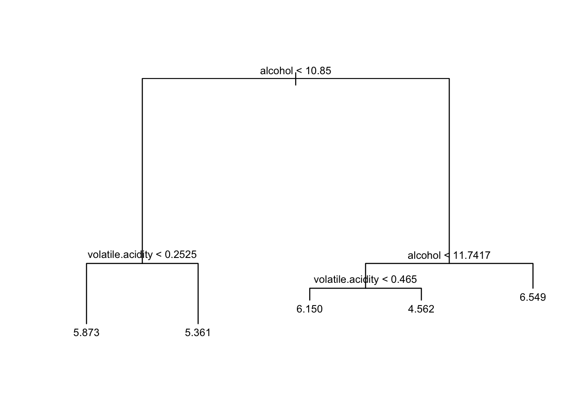
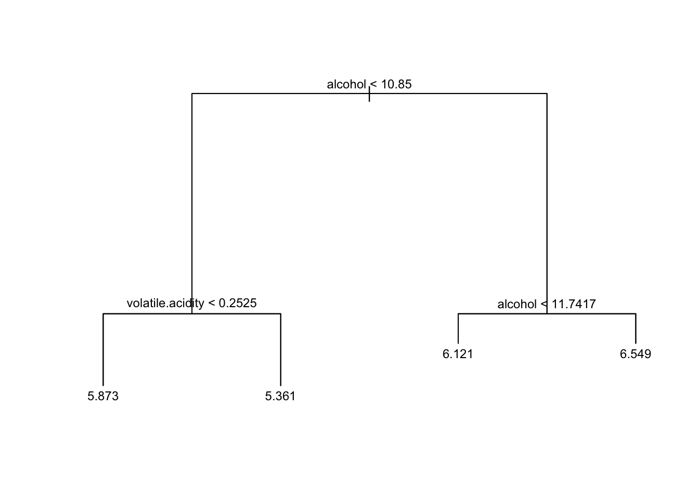
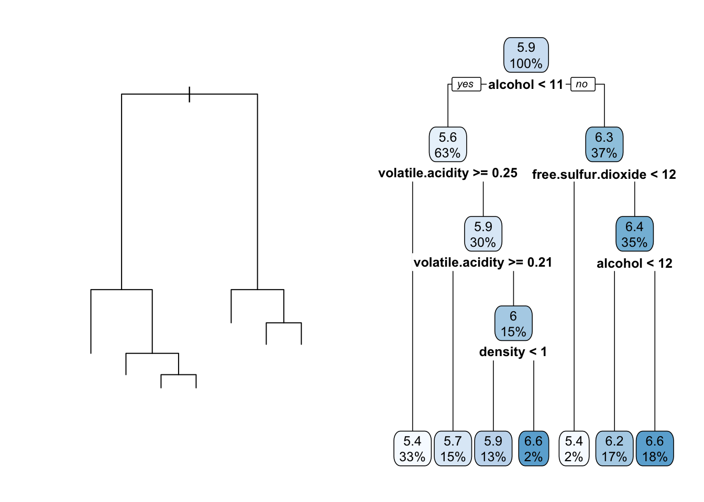
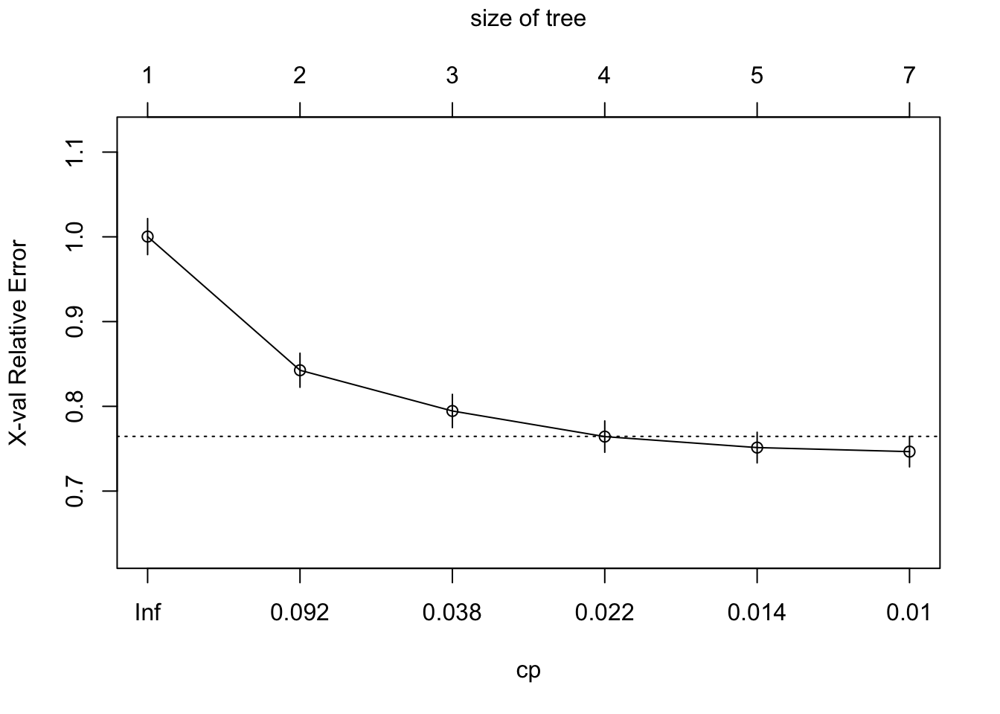
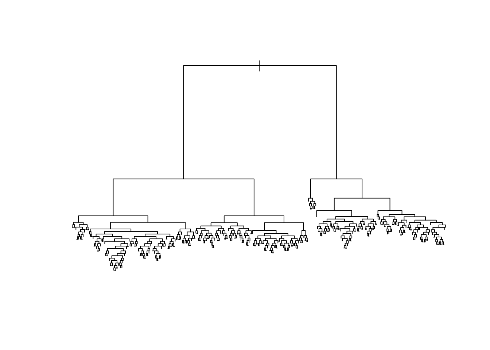
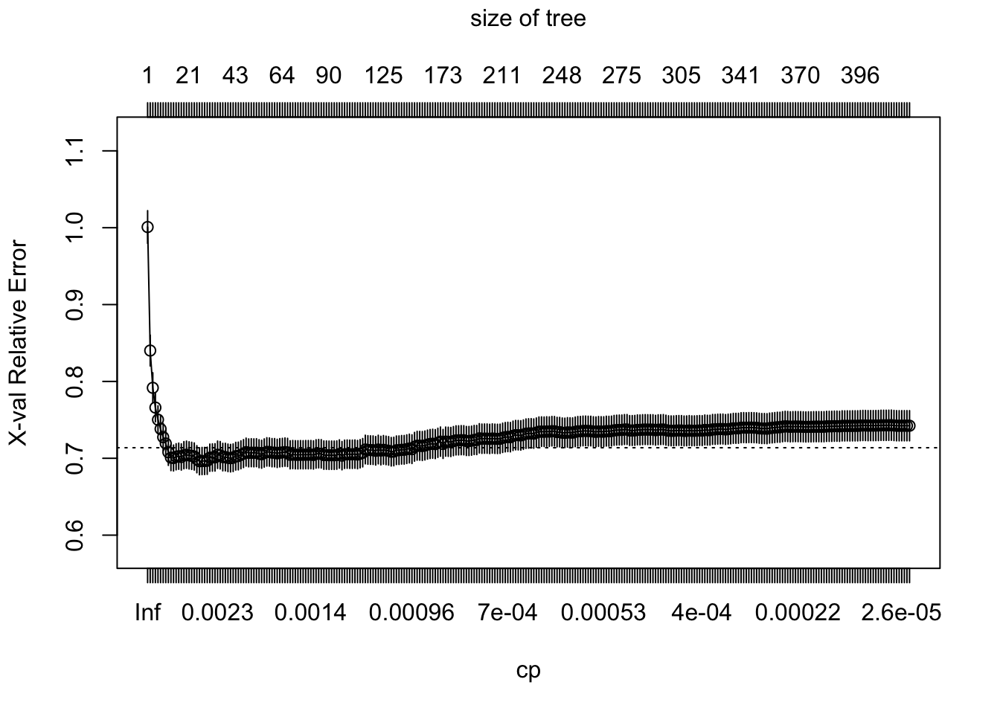

5.3 Tree-Based Regression Models in R
##
## Attaching package: 'rpart'## The following object is masked from 'package:faraway':
##
## solderThe whitewines.csv data set contains information related to white variants of the Portuguese `Vinho Verde" wine. <br><br> Specifically, we have recorded the following information: (a)fixed acidity, (b)volatile acidity, (c)citric acid, (d)residual sugar, (e)chlorides, (f)free sulfur dioxide, (g)total sulfur dioxide, (h)density, (i)pH, (j)sulphates, (k)alcohol, (l)quality` (score between 0 and 10)
The data set can be downloaded here: whitewines.csv
## fixed.acidity volatile.acidity citric.acid residual.sugar chlorides
## 1 7.0 0.27 0.36 20.7 0.045
## 2 6.3 0.30 0.34 1.6 0.049
## 3 8.1 0.28 0.40 6.9 0.050
## 4 7.2 0.23 0.32 8.5 0.058
## 5 7.2 0.23 0.32 8.5 0.058
## 6 8.1 0.28 0.40 6.9 0.050
## free.sulfur.dioxide total.sulfur.dioxide density pH sulphates alcohol
## 1 45 170 1.0010 3.00 0.45 8.8
## 2 14 132 0.9940 3.30 0.49 9.5
## 3 30 97 0.9951 3.26 0.44 10.1
## 4 47 186 0.9956 3.19 0.40 9.9
## 5 47 186 0.9956 3.19 0.40 9.9
## 6 30 97 0.9951 3.26 0.44 10.1
## quality
## 1 6
## 2 6
## 3 6
## 4 6
## 5 6
## 6 6## [1] 4898 12In R there are two packages that fit tree models: tree and rpart. The first package we only used it to generate the first figures in the slides via its function partition.tree. Below is the code that generates the plots in the lectures.
The tree Package
The syntax for fitting a regression tree with tree is similar to that used for linear regression models. For illustration purposes, let’s focus on just two predictors: alcohol and volatile.acidity to predict quality.
We start by fitting the tree:
## node), split, n, deviance, yval
## * denotes terminal node
##
## 1) root 4898 3841.00 5.878
## 2) alcohol < 10.85 3085 1845.00 5.606
## 4) volatile.acidity < 0.2525 1475 868.00 5.873 *
## 5) volatile.acidity > 0.2525 1610 775.30 5.361 *
## 3) alcohol > 10.85 1813 1378.00 6.341
## 6) alcohol < 11.7417 881 670.00 6.121
## 12) volatile.acidity < 0.465 865 616.50 6.150 *
## 13) volatile.acidity > 0.465 16 13.94 4.562 *
## 7) alcohol > 11.7417 932 624.70 6.549 *To illustrate the tree structure, we plot the fitted tree model:

and create the rectangular regions (as in the lecture), we have:
quality.quantiles = cut(whitewines$quality, unique(quantile(whitewines$quality, 0: 5 / 5)),
include.lowest = TRUE)
plot(whitewines$alcohol, whitewines$volatile.acidity, col = grey(5: 1 / 6)[quality.quantiles],
pch = 20, ylab = "volatile.acidity", xlab = "alcohol")
partition.tree(quality.tree, ordvars = c("alcohol", "volatile.acidity"), add = TRUE)If we want, we can also prune the tree using the prune.tree function:
## node), split, n, deviance, yval
## * denotes terminal node
##
## 1) root 4898 3841.0 5.878
## 2) alcohol < 10.85 3085 1845.0 5.606
## 4) volatile.acidity < 0.2525 1475 868.0 5.873 *
## 5) volatile.acidity > 0.2525 1610 775.3 5.361 *
## 3) alcohol > 10.85 1813 1378.0 6.341
## 6) alcohol < 11.7417 881 670.0 6.121 *
## 7) alcohol > 11.7417 932 624.7 6.549 *
We now detach the tree package and switch to the rpart package.
The rpart Package
Fitting a Regression Tree
The syntax for fitting a regression tree with rpart to the one we use for linear regression models. The default tree plot may not be visually appealing, so for better visualization, we can use the rpart.plot package.
set.seed(598)
wine.tree1 = rpart(quality~., data = whitewines)
par(mfrow = c(1, 2))
plot(wine.tree1)
rpart.plot(wine.tree1)
Note that in this example (unlike the previous one), we use all predictors not just two.Understanding the Fitted Tree
Starting at the root node, the average value for all observations is 5.9, representing 100% of the data points. The first split occurs based on the variable alcohol. The left node contains roughly 63% of the samples with an average of 5.6, while the right node contains the remaining 37% with an average of 6.3. Leaf nodes appear at the bottom, and their color shading indicates the magnitude of their predictions.
Cross-Validation
Cross-validation is automatically performed when using the rpart command. To inspect the cross-validation for pruning, use the printcp command, which provides a table.
CP stands for Complexity Parameter which is a scaled version of \(\alpha\) – the price or penalty we pay for keeping a split.
##
## Regression tree:
## rpart(formula = quality ~ ., data = whitewines)
##
## Variables actually used in tree construction:
## [1] alcohol density free.sulfur.dioxide
## [4] volatile.acidity
##
## Root node error: 3841/4898 = 0.7842
##
## n= 4898
##
## CP nsplit rel error xerror xstd
## 1 0.161007 0 1.00000 1.00030 0.021275
## 2 0.052469 1 0.83899 0.84260 0.020094
## 3 0.027342 2 0.78652 0.79453 0.019601
## 4 0.017711 3 0.75918 0.76429 0.018478
## 5 0.010355 4 0.74147 0.75134 0.018065
## 6 0.010000 6 0.72076 0.74656 0.017995In the output above:
nsplit means the number of splits, which implies that the number of leaf nodes (or size of a tree) is equal to \(nsplit + 1\).
rel error and xerror are the training error (RSS) and CV error, but these values are relative to a reference training error at the root node. Recall that the connection between \(\alpha\) and CP is
\[RSS(T) = \alpha |T|, \frac{RSS(T)}{RSS(root)} + CP \cdot |T|\]
Pruning
We can employ the prune command to obtain the optimal subtree by providing specific Complexity Parameter (CP) values. As an example:
## n= 4898
##
## node), split, n, deviance, yval
## * denotes terminal node
##
## 1) root 4898 3840.99 5.877909 *## n= 4898
##
## node), split, n, deviance, yval
## * denotes terminal node
##
## 1) root 4898 3840.99 5.877909 *## n= 4898
##
## node), split, n, deviance, yval
## * denotes terminal node
##
## 1) root 4898 3840.990 5.877909
## 2) alcohol< 10.85 3085 1844.906 5.605511 *
## 3) alcohol>=10.85 1813 1377.659 6.341423 *A CV path plot

If you are uncertain whether the cross-validation error has reached its minimum, you can start with a larger tree:
wine.tree2 = rpart(quality~., data = whitewines, control = list(cp = 0, xval = 10))
#printcp(wine.tree2)
plot(wine.tree2)

Optimal CP Value
We can use either the Minimum Cross-Validation error or the One Standard Error (1-SE) rule to choose the optimal CP value for pruning.
# Index of CP with lowest xerror
optimal.cp = which.min(wine.tree2$cptable[, "xerror"])
# The optimal CP value
wine.tree2$cptable[optimal.cp, 4]## [1] 0.6961474# upper bound for equivalent optimal xerror
wine.tree2$cptable[optimal.cp, 4] + wine.tree2$cptable[optimal.cp, 5]## [1] 0.713746# Row IDs for CPs whose xerror are equivalent to min(xerror)
tmp.id = which(wine.tree2$cptable[, 4] <= wine.tree2$cptable[optimal.cp, 4] + wine.tree2$cptable[optimal.cp, 5])
tmp.id = min(tmp.id)
# CP.1se = any value between row(tmp.id) and(tmp.id - 1)
CP.1se = (wine.tree2$cptable[tmp.id -1, 1] + wine.tree2$cptable[tmp.id, 1]) / 2
# Prune tree with CP.1se
wine.tree3 = prune(wine.tree2, cp = CP.1se)Let us now try to understand the relationship between the 1st column and the 3rd column of the CP table. The difference between adjacent rel error in the table is equivalent to the corresponding CP values. This difference signifies the improvement gained in RSS by adding an additional split, effectively setting the cost of that split.
After the tree is fit, the predict function predict.rpart from the rpart package can be used for making predictions on new or existing data.